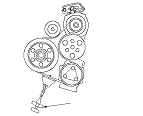
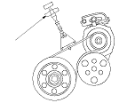
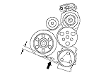
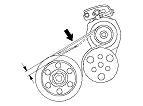

|
Special Tools Required
Belt tension gauge
07JGG-0010100
Belt Tension Gauge Method
Inspection
|
With A/C compressor:

Without A/C compressor:

|
|
Deflection Method
Inspection
|
With A/C compressor:

Without A/C compressor:

|
||||||||||||